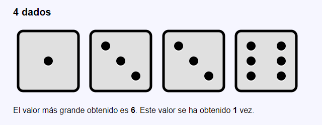

for (1) 01 - Círculos en fila
Escriba un programa que dibuje entre 1 y 10 círculos negros (al azar) en una fila de tabla.
Para facilitar la realización de los ejercicios, se proporcionan unas plantillas de los ejercicios for (1) (Sin formularios).
Puede consultar unas posibles soluciones de estos ejercicios. Si lo prefiere, puede descargar unas posibles soluciones completas de estos ejercicios.
Escriba un programa que dibuje entre 1 y 10 círculos negros (al azar) en una fila de tabla.
Escriba un programa que dibuje entre 1 y 10 círculos negros (al azar) en una columna de tabla.
Escriba un programa que dibuje entre 1 y 10 círculos de colores (al azar) en una fila de tabla.
El color de los círculos se expresa mediante códigos HWB.
Escriba un programa que dibuje entre 1 y 10 círculos de colores (al azar) y numerados (al azar, del 1 al 9) en una fila de tabla.
Escriba un programa que dibuje entre 1 y 10 círculos de colores (al azar), numerados (al azar, del 1 al 9) y girados (al azar, hasta 80 grados en cada direccion) en una fila de tabla.
Escriba un programa que cada vez que se ejecute muestre la tirada de entre 1 y 10 dados al azar y diga el total de puntos obtenidos.
Escriba un programa que cada vez que se ejecute muestre la tirada de entre 1 y 10 dados al azar y diga el número de valores pares e impares obtenidos.
Escriba un programa que cada vez que se ejecute muestre la tirada de entre 1 y 10 dados al azar y diga el valor máximo obtenido.
Escriba un programa que cada vez que se ejecute muestre la tirada de entre 1 y 10 dados al azar y diga el valor mínimo obtenido.
Escriba un programa que cada vez que se ejecute muestre la tirada de entre 1 y 10 dados al azar y diga el valor máximo obtenido y el número de veces que se ha obtenido.
 For (1) 15. Ejemplo" width="640" height="250">
Escriba un programa que cada vez que se ejecute muestre una diana y entre 1 y 10 disparos al azar. También puede mostrar la puntuación obtenida (en el centro de la diana se obtendrían 10 puntos y en el círculo exterior rojo 1 punto).
Los puntos obtenidos con cada disparo se pueden calcular con la fórmula: \(puntos = 10 - intdiv({\sqrt{$x^2 + $y^2}, 20})\), donde x e y son las coordenadas del disparo. Además hay que tener en cuenta que si el resultado obtenido con la fórmula es negativo, la puntuación debe ser 0.
\(d = \sqrt{$x^2 + $y^2}\)
\(numeroFranjas = intdiv({\sqrt{$x^2 + $y^2}, 20})\)
Como la distancia aumenta a medida que nos alejamos del centro, si el disparo da en el blanco central, numeroFranjas será 0. Cuando el disparo da fuera de la diana, numeroFranjas será 10, 11, etc, aumentando a medida que se aleja de la diana.
\(puntos = 10 - intdiv({\sqrt{$x^2 + $y^2}, 20})\)
Sin olvidar que si el resultado es negativo (es decir, si el disparo da fuera de la diana), la puntuación debe ser 0.